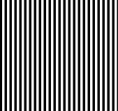
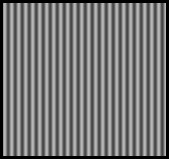

USAGE: lpfltr inimg outimg [-f CUTOFF <0.50>] [-s FLTRSIZE <odd>]
[-q QUICK_FLAG] [-L]
lpfltr performs low-pass filtering upon image
using filter window of chosen size; the default is to use
a Gaussian-shaped filter window.
ARGUMENTS:
inimg: input image filename (TIF)
outimg: output image filename (TIF)
OPTIONS:
-f CUTOFF: <0.0 to 0.5> is the fraction
of the passband;
the default is 0.25, that is half of original passband.
-s FLTR_SIZE: is the size of the filter; this will override
the size that would otherwise be automatically set from
the cutoff frequency; this size must be odd.
-q QUICK_FLAG: for quick (and dirty) rectangular filtering;
NOTE: specifying both cutoff frequency and filter
size are redundant for the rectangular filter;
the cutoff is used if both are specified.
-L: print Software License for this module
Example:
lpfltr stripe7.tif stripe7L7.tif -s 7
stripe7.tif:

stripe7L7.tif:

Copyright (C) 1999 MLMSoftware Group, LLC.